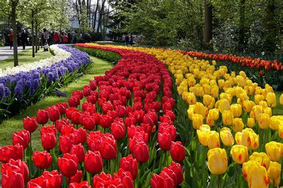

Atrações Naturais
Canais de Amsterdã: Os canais de Amsterdã são uma das características
mais icônicas da
cidade.
Construídos durante a Idade de Ouro Holandesa no século XVII, esses canais formam uma rede de vias
navegáveis
que se estende por mais de 100 quilômetros, com cerca de 90 ilhas e 1.500 pontes. Passear de barco pelos
canais
oferece uma perspectiva única da arquitetura histórica e dos charmosos edifícios que margeiam as águas.


Parque Nacional Hoge Veluwe: Este parque é um verdadeiro tesouro
natural, cobrindo
aproximadamente 55 km². É um dos maiores parques nacionais da Holanda e oferece uma variedade de paisagens,
incluindo florestas densas, charnecas abertas e dunas de areia. O parque também abriga o Museu
Kröller-Müller,
que possui uma das maiores coleções de obras de Vincent van Gogh, além de esculturas ao ar livre.


Keukenhof: Conhecido como o “Jardim da Europa”, o Keukenhof é um dos
maiores jardins de
flores do mundo. Localizado em Lisse, o parque cobre uma área de 32 hectares e é famoso por suas
espetaculares
exibições de tulipas, narcisos e outras flores de primavera. O Keukenhof abre suas portas apenas por algumas
semanas a cada ano, geralmente de março a maio, atraindo visitantes de todo o mundo.
